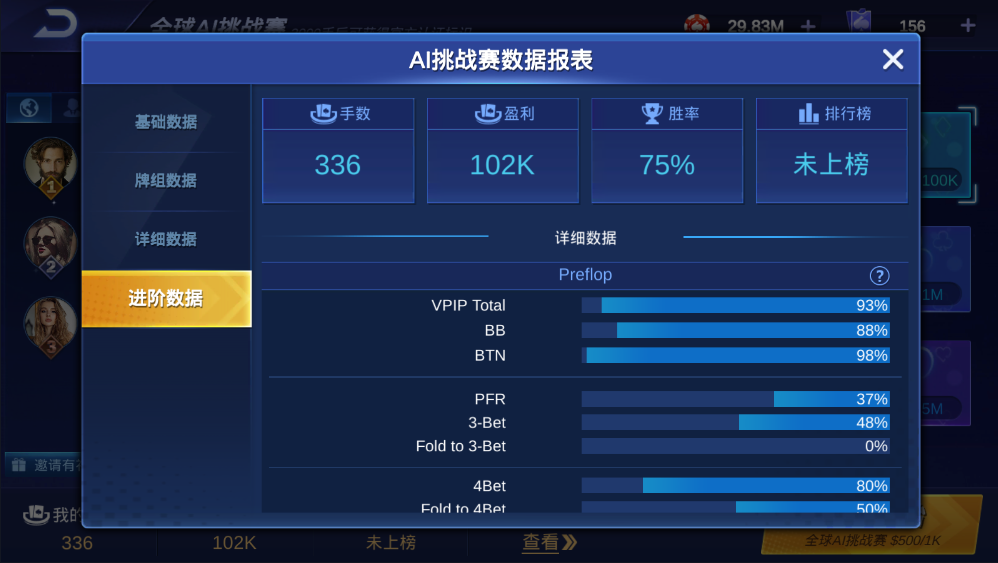
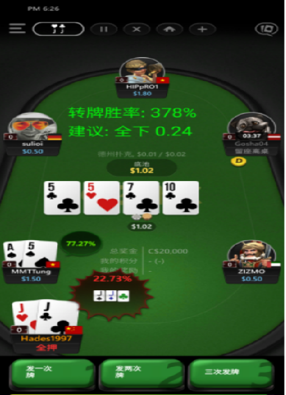

Poker GTO Trainer / 德州扑克AI源码
面向策略研究、AI 陪练、决策分析和二次开发的德州扑克 GTO 训练器源码，覆盖 CFR 策略学习、模型训练、实时决策 API 与可视化展示。
GTO TrainingCFR StrategyPoker AIPythonC++
项目定位
本项目强调 AI 策略训练、决策分析和技术研究，与普通扑克平台源码区分开，适合用于 GTO 学习、模型验证、AI 训练演示和授权二次开发。
核心能力
支持 1v1 到多人局面分析、自我博弈训练、行动概率评估、EV 分析、策略可视化和 Python / C++ 接入，便于构建内部训练工具或技术演示系统。
产品截图



阅读与下载
请先查看仓库 README 了解算法、功能模块、部署方式和使用边界。如需源码评估、演示包或定制开发，可通过 Email：ttpoker40@gmail.com 或 Telegram：@alibabama401 联系。